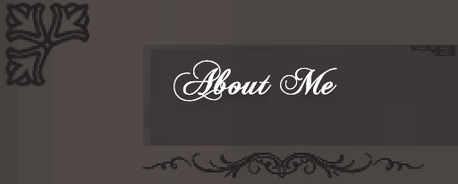

Humans are definitely the best creation of Nature. I am a human being, fortunately. This nature has provided me with the highest level of intelligence that no other creature is blessed with. I, Sujana Suraiya Islam an undergraduate student of Tokyo International University and currently a resident of Tokyo, Japan.
In comparison to studies, I am good at sports. so I am the captain of my class football team. I am the best football player at my school. Besides this, I am a fast runner also and I love athletics. I am an expert at swimming.
The advice of my parents had a keen effect on my habits. I believe in speaking the truth and try my best not to lie. My parents always advised me that if I commit a mistake, I should admit it. I try my best to do so. I know how to remain happy in every condition. Because I believe that: “Happiness is not out there; its in you.”.
I generally spend my lot of free time in playing football. I was so interested to play football from my childhood however started learning to play well when I was 5 years old. If you want to join My fotball club go to this link.